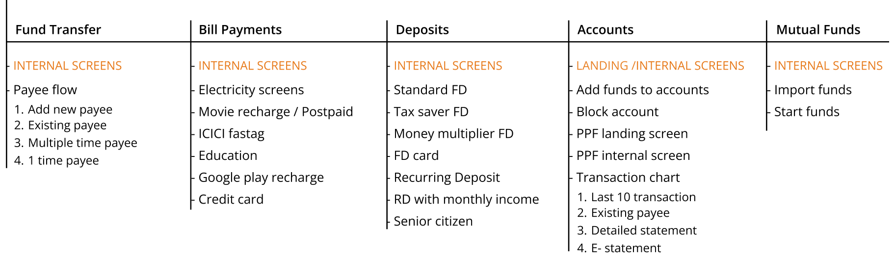

Sparklin
I worked for 3 months at Sparklin as a user experience design intern. During my internship, my major focus area was ICICI Nirvana design. I learned a thoughtful design process with design principles and documentation of the product, in terms of implementing it in real life for users.

- DURATION
- August - November 2023 Internship
- ROLE
- User Experience Design Intern
- TEAM
- ICICI NIRVANA Design team
- INDEX
- 1. Overview
- 2. ICICI NIRVANA (DLS) Design Language System
- 3. ICICI Modules and adaptations
- 4. Training Level-ups and Tips
- 5. Learnings
*Due to NDS restrictions, I am unable to disclose all the visual details about my project and work. Please contact me for more information at ashwiniakre@gmail.com
AN OVERVIEW WHAT I DID
My 3 - months of internship was divided into 2 - parts
- A.TRAINING
-
- During the training phase of my internship, I was engaged in the completion of 5 level-up tasks.
- These tasks proved instrumental in revisiting design principles, gaining proficiency in figma tools & enhancing my skills in design writing.
- Through this experience, I acquired a deeper understanding of the adaptations required for diverse tasks.
- B. PROJECT
-
- The majority of my internship was centered around the implementation of ICICI NIRVANA, during which I focused on various modules of the banking website.
- I was involved in creating workflows for bill payments, bank accounts, deposits, mutual funds investments & others.

ICICI NIRVANA DLS (Design Language System) encompasses components, illustrations, design styles, and more.
What is ICICI NIRVANA?
ICICI Nirvana represents the second phase in the redesign of the
ICICI website and app. In this phase, entirely new
screens, modules, and flows are designed, adopting a
dialer format that replaces the top navigation.
S tates of each element were explored to reach all the possibilities that each and every icon can have while hovering or tapping.


ILLUSTRATIONS
In ICICI, there is also a focus on using illustrations and visuals to improve the redesigning and understanding of the user.

Deposits senior citizen

Loading screen

Accounts statement growth
ILLUSTRATIONS
ICICI modules include various types of modules and flows, which most websites have in their top navigation.
Main modules
Landing screen

Internal screen

Adaptations
Screens are adapted in all three formats and designed differently according to the user convenience, allowing users to interact with them using a mouse on desktops or hands on phones and tablets for directions and (CTA).


Bank account E-statement (web, tab, mobile adaptations)
TRAINING AND LEVEL-UPS

- During my internship at Sparklin, my experience has been both challenging and rewarding.
- I've delved into various aspects of design, particularly in the realm of banking websites.
- This opportunity has provided me with valuable insights into catering to diverse user needs.Being part of the ICICI team, I gained a firsthand understanding of how things operate at the service level.
- I learned how requirements are initiated and served, quickly adapting to the software and processes in place.
- While the journey had its fair share of ups and downs, I've grown significantly, developing a more mature design thinking approach.